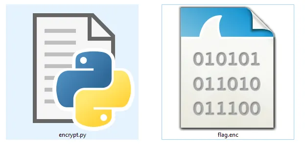

Can you break the one-time multi pad?
https://s3-eu-west-1.amazonaws.com/hubchallenges/crypto/OTMP.zip

Solution
Code Analysis
So let’s understand what is happening here:
1- Read the plain text and the key as arguments from the user.
2- Loop from zero to the length of the key.
3- Move the first byte of the key to the end of the key.
4- Xor the plain text with the swapped key.
So to make the encryption routine here more clear let’s assume that our text is ‘abc’ and the key is ‘123’ and as the length of the key is 3 let’s see what will be xored with our plaintext at each round.
1- At the first round the first char of the key will be moved to the end and the key will be ‘231’ so ‘a’ will be xored with ‘2’ ,’b’ xored with ‘3’ and ‘c’ xored with ‘1’.
2- At the second round the first char of the key will be moved to the end and the key will be ‘312’ so ‘a’ will be xored with ‘3’ ,’b’ xored with ‘1’ and ‘c’ xored with ‘2’.
3- At the third round the first char of the key will be moved to the end and the key will be ‘123’ so ‘a’ will be xored with ‘1’ ,’b’ xored with ‘2’ and ‘c’ xored with ‘3’.
So simply each char of the plaintext will be xored with all the chars of the key.
Now how we can retrieve the right key as we don’t know the length ,So to break the encryption algorithm here we will do a simple thing.
Now let’s try on our assumed key and plaintext as we saw the first char ‘a’ will be xored with ‘1’ xored with ‘2’ xored with ‘3’and as we know as the all chars of the key will be between 0 and 255 so the result of xoring the key will always be number between 0 and 255 despite the length of the key or how many chars there in the key, So to solve this challenge we will have to bruteforce xoring the encrypted flag with numbers between 0 and 255 to do that we will use cyberchef.
FLAG{MULT1_PAD_1time_X0RR}